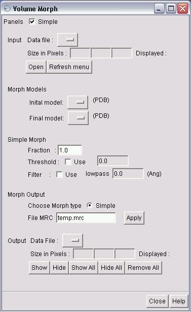
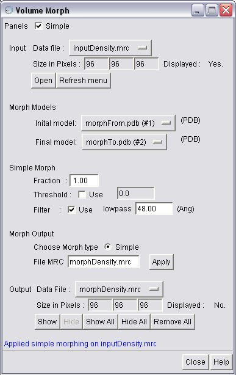
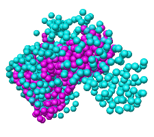
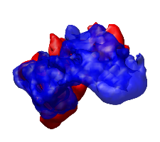

The Volume Morph module is available as a part of the Airs-Segment package. The module is a Chimera extension module. To use this module, the Segment Menu module of the Airs-Segment package is required. You will need the Chimera and EMAN software packages to use this module.
The module helps morph a 3D density map displayed in Chimera using deformation specified by two atomic models.
Note: This version of the Airs-Segment package is a pre-release version.
The module files are stored in the directory VolumeMorph. To list the module under Chimera's Tools menu, add the directory - containing - the VolumeMorph directory to Chimera's list of Tools.
To do so, open Chimera's main window, choose Perferences under Favorites menu, then choose the Tools category and then Add the directory - containing - the VolumeMorph directory. This will list the tool under AIRS on the Tools menu.
To start the module from the Chimera menu, first you will need to ensure that the module is listed under Chimera's Tools menu. Then, click on Volume Morph in the AIRS menu, under Chimera's Tools menu.
Alternatively, you can use the command line tool in Chimera's IDLE tool (under Programming tools on the Tools menu), and type:
>>> import VolumeMorph
>>> VolumeMorph.volmorph.show_vol_morph_dialog()

The Volume Morph dialog panel has five main sections. The first section is the Input data section. The Data file menu automatically lists available data regions in Chimera's Volume Viewer. The Morph models menu lists all Chimera open models including volume data regions in Chimera's Volume Viewer.
To select an input (volume) data set, simply pick an entry from the Data file menu. The size of the input data set in pixels is automatically displayed on the dialog, below the menu. If the data set is displayed in Chimera, then the Displayed value is set to Yes.
To open new models, click the Open button below the menu. This will open Chimera's Volume Viewer dialog and an Open file browser dialog. After adding the models, if the models are not listed on the data menu, click the Refresh menu button, next to the Open button on the Volume Morph dialog.
Alternatively, you can directly open new models using Chimera's Volume Viewer. Once again, if the newly opened models are not displayed on the data menu, hit the Refresh menu button.
To select an input morph models, simply pick an entry from the Morph models menus. The two models are used to specify the deformation using atom positions.
To open new models, use Chimera's File menu on the Chimera main window to open models (volume data or PDB structures).
You can perform a simple morph (linear deformation) on the input data, in terms of the displacement of the atoms in the two input atomic models (morph models). The two atomic models are assumed to have one-to-one correspondence between the atoms. To display options for this type of morphing, check the Simple box in the list of panels at the top of the dialog.
The Fraction parameter should be between 0.1 and 1.0 and specifies the fraction of displacemnt (between atom positions) that should be used for morphing.
To use a threshold, check the Threshold box and specify a value.
To apply a filter (lowpass), after morphing, check the Filter box and specify a lowpass parameter in Angstroms. This filter is applied using the EMAN software (proc3d command).
This section allows you to chose the type of morphing you want to apply. Currently, only a Simple morphing (based on linear deformations is supported).
You can specify an output file name, and the morphed density is saved as a density map in MRC format.
The Apply button applies the morphing to the input density map, based on the Morph models and the type of morphing.
The output data section has an Output data menu that lists the current morphed output files. To open or display the file in Chimera, click on the Show button. If more than one output file was created, then you can click on Show All button to open and display all the files on the menu.
The Hide button closes the model (associated with the file on the Output data menu) in Chimera, but leaves the entry on the Volume Viewer data menu unchanged. The Hide All button applies the Hide button to all the files on the output data menu.
The Remove All button removes all the entries on the Output data menu, but leaves the corresponding entries (if any) on the Volume Viewer data menu unchanged.
The Close button closes the Volume Morph dialog. The Help button opens this help page.

We select Simple morphing, set Fraction to 1.0, set Filter to 48 Angstroms, and then apply morphing.
 
In the left figure, we have the two morph models (atomic structures). The morphing is specified by the displacement of the atoms (from pink to bluish-green).
In the right figure, we have the input (red) and morphed (blue) volume density.
The filter currently calls proc3d command of EMAN, and applies a lowpass filter. The equivalent command line option for a lowpass filter of 48 Angstroms would be:
proc3d morph.mrc morph_and_filter.mrc lp=48